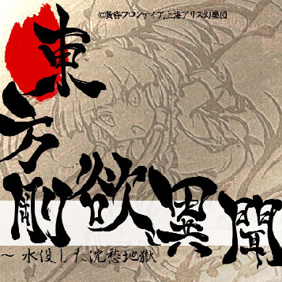

東方剛欲異聞 ～ 水没した沈愁地獄
(Touhou Gouyoku Ibun)

Touhou Project 17.5
Developer: Twilight Frontier & Team Shanghai Alice
Release Year: 2019 (Trial), 2021 (Full)
Platform: Windows
Soundtrack composed by ziki_7
Currently demo-only
Gameplay Sample
Soundtrack